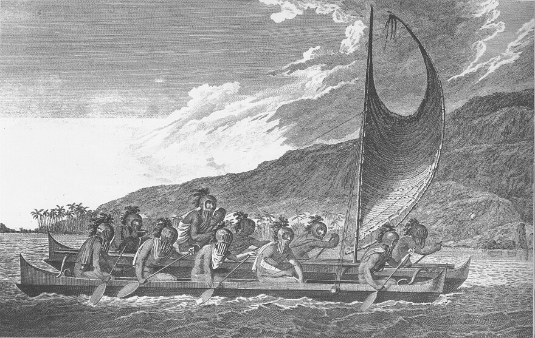

The History of Hawaii
Hawaii's history is a rich tapestry of indigenous culture, exploration, and significant political change. The archipelago's history can be divided into several key periods: ancient Polynesian settlement, the Kingdom of Hawaii, the period of Western influence and the overthrow of the monarchy, annexation by the United States, and statehood.
Ancient Polynesian Settlement
The Hawaiian Islands were first settled by Polynesians who navigated across the Pacific Ocean in canoes, arriving around 1,500 years ago. These early settlers brought with them plants, animals, and their rich culture, establishing the foundations of Hawaiian society. They developed a complex system of agriculture and aquaculture, and their society was organized into chiefdoms, ruled by ali'i (chiefs).
The Kingdom of Hawaii
In 1778, British explorer Captain James Cook became the first European to visit Hawaii. His arrival marked the beginning of increased interaction between Hawaiians and Europeans. In the early 19th century, King Kamehameha I successfully unified the Hawaiian Islands, establishing the Kingdom of Hawaii in 1810. This period saw the introduction of Western technology, trade, and Christianity. Missionaries arrived and had a significant impact on Hawaiian society, including the establishment of schools and the introduction of a written Hawaiian language.
Western Influence and Overthrow of the Monarchy
Throughout the 19th century, Hawaii became increasingly influenced by Western powers. The sugar industry grew rapidly, leading to economic and political changes. Many foreigners, particularly Americans, acquired large tracts of land and became influential in Hawaiian affairs. In 1887, a group of these foreigners forced King Kalakaua to sign the Bayonet Constitution, which significantly reduced the monarchy's power. In 1893, Queen Liliuokalani, the last reigning monarch of Hawaii, was overthrown by a group of American and European businessmen with the support of the U.S. military. The coup led to the establishment of a provisional government, which sought annexation by the United States. Despite resistance from Native Hawaiians and Queen Liliuokalani, Hawaii was annexed by the United States in 1898.
Annexation and Statehood
Hawaii was annexed as a U.S. territory in 1898, largely due to its strategic location in the Pacific Ocean. During World War II, Hawaii played a crucial role, particularly after the attack on Pearl Harbor on December 7, 1941, which led the United States into the war. The islands became a critical military base for the U.S. during the war. After the war, the movement for statehood gained momentum. On August 21, 1959, Hawaii became the 50th state of the United States following a statehood referendum in which the majority of Hawaiian residents voted in favor of becoming a state.
Modern Hawaii
Today, Hawaii is a melting pot of cultures, with significant influences from Native Hawaiian, Asian, and Western traditions. The state is known for its unique cultural heritage, beautiful landscapes, and as a major tourist destination. Efforts to preserve and promote Native Hawaiian culture and language continue, reflecting the islands' rich history and diverse population. Hawaii's history is marked by its transformation from a series of independent chiefdoms to a unified kingdom, then to a territory and finally a state within the United States, all while maintaining a distinct and vibrant cultural identity.